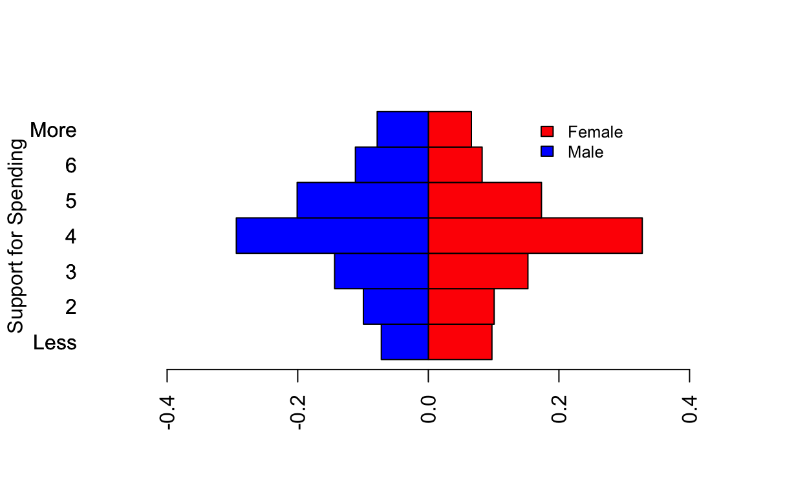
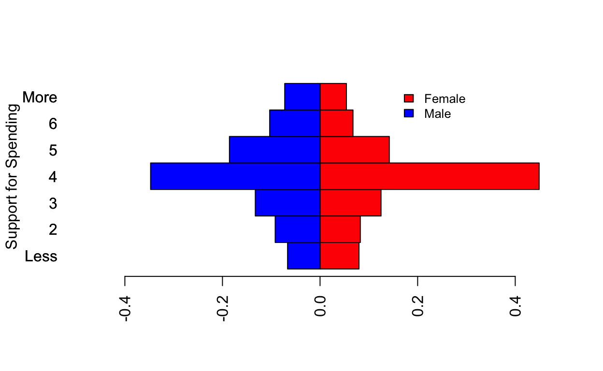
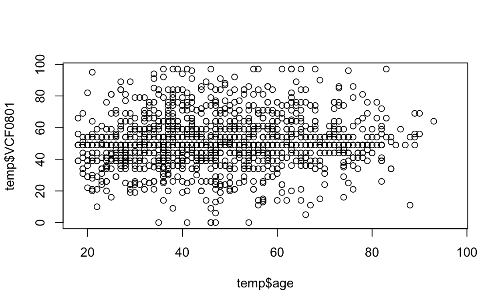
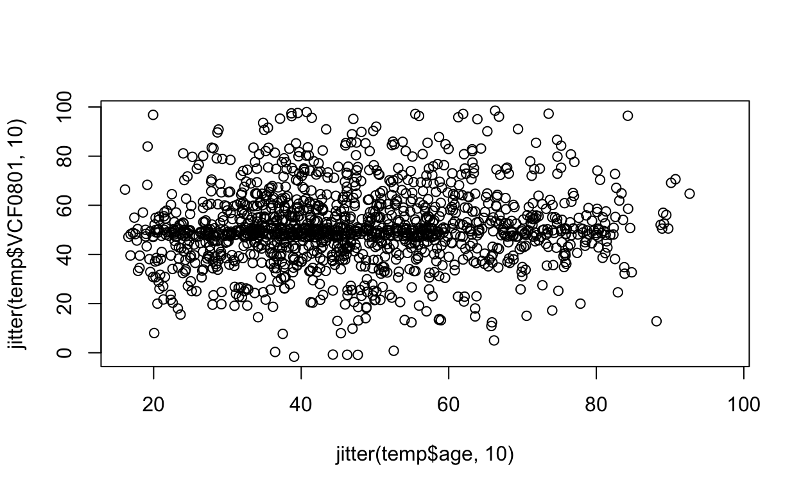
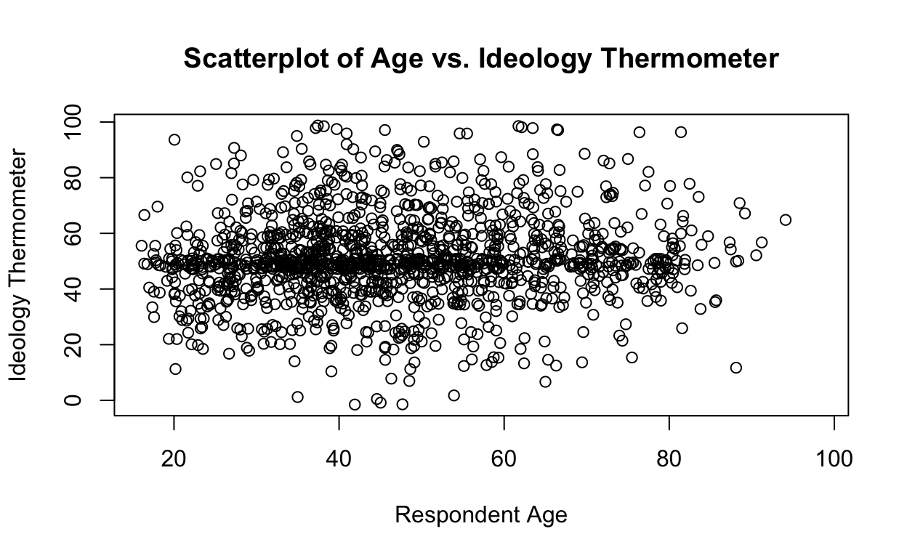

The package includes data that was originally provided in the .dta (Stata format). The anes dataset has been automatically loaded to be available for this session.
When R reads in a stata file, variables with value labels are read in as numeric variables but value labels are retained and are accesible. The package sjlabelled allows us to view the value labels, and has been automatically loaded for this session.
Retrieve the variable (column) names of the anes dataset.
#colnames()colnames(anes)The first variable we will look at is support for military spending, VCF0828.
table(anes$VCF0828)##
## 1 2 9
## 797 2374 230table(as_label(anes$VCF0828))##
## NA;no post IW;form II,IV (1972)
## 0
## Cut military spending
## 797
## Continue spending at least at present level
## 2374
## DK;depends;pro-con;other
## 230There are three distinct ways to deal with the strange category including “DK, depends, pro/con” responses. First, eliminate all DK responses in this category and treat them as missing data. Second, treat as ordinal measure and reorder so that the DK category is in the middle. Third, treat as categorical measure and create a new variable distinguishing “continue” from all other categories. Therefore, we want to create three recodings for variable VCF0828: milspendA, milspendB, and milspendC.
The original variable VCF0028 is numeric, so recode into a new variable, milspend, with short factor labels.
##Recode into new factor variable with labels
#inspect variable and compare#Be sure to use the "labels" option to assign a character vector of labels to the numbers 1, 2 and 9.
#See "Recoding Factors" Exercise 2 ##Recode into new factor variable with labels
anes$milspend<-factor(anes$VCF0828, labels=c("Cut", "Continue", "DK/ambivalent"))
#inspect variable and compare
table(anes$milspend)Try recoding the factor variable spendmil into a new variable spendmilA which treats all “DK/Ambivalent” responses as missing data. Include a table command to be sure your recode worked as expected.
#recode and drop level "DK"
#inspect variable and compare#See "Recoding Factors" Exercise 4#recode and drop level "DK"
anes$spendmilA<-factor(anes$milspend, levels=c("Cut","Continue"))
#inspect variable and compare
table(anes$spendmilA)Reorder the levels of spendmil to create a new ordinal factor called spendmilB with the DK category in the middle.
##reorder the levels correctly
#inspect variable and compare#See "Recoding Factors" Exercise 5#levels("Cut", "DK/Ambivalent","Continue")##reorder the levels correctly
anes$spendmilB<-factor(anes$milspend, levels=c("Cut","DK/Ambivalent", "Continue"))
#inspect variable and compare
table(anes$spendmilB)Create a new variable, spendmilC, which distinguishes “continue” from all other categories.
#create a new variable for recoding
#recode and collapse using levels
#inspect new variable and compare#see RecodingFactors tutorial, Exercise 7#create a new variable for recoding
anes$spendmilC<-anes$milspend
#recode and collapse using levels
levels(anes$spendmilC)<-list(CutDK=c("Cut","DK/ambivalent"),Continue=c("Continue"))
#inspect new variable and compare
table(anes$spendmilC)This series of questions asks about gender differences in attitudes towards military spending.
Therefore, a gender variable that is clearly categorical (not numeric) needs to be created. If the variable has clear value labels, it will be easier to interpret the results of statistical tests. Create the gender variable.
##Recode into new factor variable with labels
#inspect variable and compare#check the codebook for value labels
#or try the following
table(as_label(anes$VCF0104))#see RecodingFactors tutorial, Exercise 2anes$gender<-factor(anes$VCF0104, label=c("Male","Female"))
table(anes$gender)Is there a gender difference in support for military spending if we use anes$spendmilA, the option which treats all DK responses as missing (leaving only “Cut” and “Continue”.) Use the correct bivariate test to check.
print(prop.table(table(anes$spendmilA,anes$gender), 2), digits=2)
#what do you notice about the variables?prop.test(table(anes$gender,anes$spendmilA))#try
print(prop.table(table(anes$spendmilB,anes$gender), 2), digits=2)
#what do you notice about the variables?chisq.test(anes$spendmilB,anes$gender)Is there a gender difference in support for military spending if we use anes$spendmilC, the option which treats the variable as binarybcategorical with “Continue” vs “all other categories”Cut/DK“. Use the correct bivariate test to check.
#try
print(prop.table(table(anes$spendmilC,anes$gender), 2), digits=2)
#what do you notice about the variables?prop.test(table(anes$gender,anes$spendmilC))This series of questions asks about gender differences in attitudes towards the use of military force. The original variable, VCF0844, is reverse coded, such that “Extremely Willing” is equal to 1 on 1-5 pt scale.
table(anes$VCF0844)##
## 1 2 3 4 5 8
## 373 983 2984 902 153 76table(as_label(anes$VCF0844))##
## Extremely willing Very willing Somewhat willing Not very willing
## 373 983 2984 902
## Never willing DK NA
## 153 76 0Recode VCF0844 into a new variable, milforce, that is reordered with higher numbers corresponding to higher levels of support for the use of force. Treat DK responses as missing data.
##recode into a new variable, with changes as needed
##assign NA to the correct subset of the new variable
#inspect new variable and compare#5=6-1, 4=6-2
#see RecodingFactors, Exercise 3##recode into a new variable, with changes as needed
anes$milforce<-6-anes$VCF0844
##assign NA to the correct subset of the new variable
anes$milforce[anes$VCF0844==8]<-NA
#inspect new variable and compare
summary(anes$milforce)Test whether there is a gender difference in attitudes towards the use of force.
#try
print(prop.table(table(anes$milforce,anes$gender), 2), digits=2)
##what do you notice about the variables?#t.test(anes$milforce~anes$gender)This series of questions asks about gender differences in attitudes towards military spending measured using a 7 point scale.
##
## 1 2 3 4 5 6 7 9
## 1447 1699 2515 5286 3163 1635 1219 2614##
## NA;telephone IW (2000) Greatly decrease defense spending
## 0 1447
## Greatly increase defense spending DK;haven't thought much about it
## 1219 2614There are lots of DK resopnses, so we have two options for dealing with DKs - omit (A) or place at midpoint (B).
Recode VCF0843 into a new variable, milspend7A, and treat “DK” responses as missing data.
##recode into a new variable
##assign NA to the correct subset of the new variable
#inspect new variable and compare#see RecodingFactors, Exercise 3##recode into a new variable
anes$milspend7A<-anes$VCF0843
##assign NA to the correct subset of the new variable
anes$milspend7A[anes$VCF0843==9]<-NA
#inspect both variables and compare
table(anes$milspend7a)The prop.table output is difficult to read with so many categories, so I have included a basic back to back barplot to more easily eyeball the gender differences.
results<-prop.table(table(anes$milspend7A,anes$gender), 2)
rownames(results)[c(1,7)]<-c("Less","More")
print(results, digits=2)##
## Male Female
## Less 0.072 0.097
## 2 0.099 0.101
## 3 0.144 0.153
## 4 0.294 0.328
## 5 0.201 0.173
## 6 0.112 0.082
## More 0.078 0.066barplot(results[,2], col="red" , horiz=TRUE, space=0, ylab="Support for Spending",xlim=c(-.5,.5),las=2)
barplot(-results[,1], col="blue", horiz=TRUE, space=0, add=TRUE, axes=FALSE, las=2)
legend(.15,7,legend=c("Female","Male"),fill=c("red","blue"), cex=.8,bty="n")
Test whether there is a gender difference in attitudes towards the use of force, using milspend7A.
##Variables with 7 response categories are usually treated as intervalt.test(anes$milspend7A~anes$gender)#create the new variable findRestart
#then assign the value 4 to a subset of the casesanes$milspend7B<-anes$VCF0843
anes$milspend7B[anes$VCF0843==9]<-4Another visual inspection of the variable.
##
## Male Female
## Less 0.067 0.080
## 2 0.092 0.083
## 3 0.133 0.125
## 4 0.347 0.449
## 5 0.186 0.142
## 6 0.103 0.068
## More 0.072 0.054
Test whether there is a gender difference in attitudes towards the use of force, using milspend7A.
##Variables with 7 response categories are usually treated as intervalt.test(anes$milspend7B~anes$gender)Inspect the ideology thermometer, VCF0801, using the commands summary and hist.
#summary(...)
#hist(...)summary(anes$VCF0801)
hist(anes$VCF0801)The variable VCF0301 records the respondents self-reported ID, collected using the branched question (see codebook).
##
## 1 2 3 4 5 6 7 9
## 8739 10078 5258 4922 4546 6628 5362 823##
## DK;NA;other;refused to answer;no Pre IW
## 0
## Strong Democrat
## 8739
## Weak Democrat
## 10078
## Independent-Democrat
## 5258
## Independent-Independent
## 4922
## Independent-Republican
## 4546
## Weak Republican
## 6628
## Strong Republican
## 5362
## Apolitical (1966 only: and DK)
## 823There are two distinct ways we might consider whether or not ideology scale scores are affected by party identification. We could look at party ID as an interval level variable (Option A), nominal level variable (Option B), or compare Democrats to non-Democrats/Republicans to non-Republicans (Option C).
##recode into a new variable
##assign NA to the correct subset of the new variable
#inspect new variable and compare#see Recoding Factors, Exercise 3##recode into a new variable
anes$party7<-anes$VCF0301
##assign NA to the correct subset of the new variable
anes$party7[anes$VCF0301==9]<-NA
#inspect new variable and compare
table(anes$party7)To treat party7 as an ordinal level variable, we need to recode it into a factor. The easiest way to do this is to work with the newly created party7 variable and assign a vector of value labels.
##Recode into new factor variable with labels
#inspect variable and compare#check the codebook for value labels
#or try the following
table(as_label(anes$VCF0301))#see RecodingFactors tutorial, Exercise 2##Recode into new factor variable with labels
anes$party7f<-factor(anes$party7,labels=c("Strong Democrat", "Weak Democrat", "Lean Democrat", "Independent", "Lean Republican", "Weak Republican", "Strong Republican"))
#inspect variable and compare
table(anes$party7f)Now use VCF0301 to create a logical variable, dem, distinguishing Democrats from non-Democrats.
#recode using logical test
#inspect new variable and compare#see Recoding Factors, Exercise 6#recode using logical test
anes$dem<-anes$VCF0301%in%c(1:3)
#inspect new variable and compare
table(anes$dem)#recode using logical test
#inspect new variable and compare#recode using logical test
anes$rep<-anes$VCF0301%in%c(5:7)
#inspect new variable and compare
table(anes$rep)There are three distinct approaches we can take to exploring this relationship, depending on whether we treat Party ID as interval, ordinal or nominal (based on recodes above).
Investigate the relationship between partyid and ideology by calculating the correlation between the two.
#hint: see BivariateTest, Section 5
#hint: use two numeric variables
#hint: remember to include option for missing datacor(anes$VCF0801,anes$party7,use="pairwise.complete.obs")Calculate the group means of ideology for each level of partyid. Conduct the related statistical tests: anova and regression.
#calculate group means
#regression model
#anova model#See Bivariate Test, Section 4
#Be sure to use one factor variable and one numeric
#Be sure to include option for missing data#calculate group means
tapply(anes$VCF0801,anes$party7f,function(x) mean(x, na.rm=TRUE))
#regression model
summary(lm(anes$VCF0801~anes$party7f))
#anova model
anova(lm(anes$VCF0801~anes$party7f))#diff between democrats and non-democrats
#diff betwen republicans and non-republicans#See Bivariate Tests, Section 1#diff between democrats and non-democrats
t.test(anes$VCF0801~anes$dem)
#diff betwen republicans and non-republicans
t.test(anes$VCF0801~anes$rep)The variable VCF0101 in the anes dataset records the respondent’s age, in years. As you can see from the following results, age is a numeric variable.
anes$age<-anes$VCF0101
summary(anes$age)## Min. 1st Qu. Median Mean 3rd Qu. Max. NA's
## 17.00 32.00 43.00 45.76 59.00 99.00 2114To visualize the bivariate relationship between age and ideology, we can use a scatterplot as both variables are continuous. But the plot gets very crowded. So this plot uses the jitter command with only one year of data.
#create a temporary dataset with only cases from 2000 election
temp<-anes[anes$VCF0004==2000,]
#create a scatterplot of temp
plot(temp$VCF0801~temp$age)
#using jitter makes data easier to read
plot(jitter(temp$VCF0801,10)~jitter(temp$age,10))
#adding axis labels makes the plot look much nicer
plot(jitter(temp$VCF0801,10)~jitter(temp$age,10), xlab="Respondent Age", ylab = "Ideology Thermometer", main="Scatterplot of Age vs. Ideology Thermometer")
#calculate the correlation coefficient
#summarize the linear model##See Bivariate Test, Section 5
##Remember to account for NA values#calculate the correlation coefficient
cor(anes$VCF0801,anes$age, use="pairwise.complete.obs")
#summarize the linear model
summary(lm(VCF0801~age, data=anes))The regression model below allows for a possible non-linear (quadratic) relationship between age and ideology. Note Instead of computing the quadratic term of age and creating a new explicit variable (i.e., anes\(agesq<-anes\)age^2), I include the quadratic term explicitly in the regression model by using the I() or AsIs function.
summary(lm(anes$VCF0801~anes$age+I(anes$age^2)))##
## Call:
## lm(formula = anes$VCF0801 ~ anes$age + I(anes$age^2))
##
## Residuals:
## Min 1Q Median 3Q Max
## -53.715 -6.323 -1.898 7.382 48.222
##
## Coefficients:
## Estimate Std. Error t value Pr(>|t|)
## (Intercept) 44.490310 0.675332 65.879 < 2e-16 ***
## anes$age 0.275141 0.029880 9.208 < 2e-16 ***
## I(anes$age^2) -0.002051 0.000302 -6.793 1.12e-11 ***
## ---
## Signif. codes: 0 '***' 0.001 '**' 0.01 '*' 0.05 '.' 0.1 ' ' 1
##
## Residual standard error: 15.27 on 29444 degrees of freedom
## (17991 observations deleted due to missingness)
## Multiple R-squared: 0.008428, Adjusted R-squared: 0.00836
## F-statistic: 125.1 on 2 and 29444 DF, p-value: < 2.2e-16